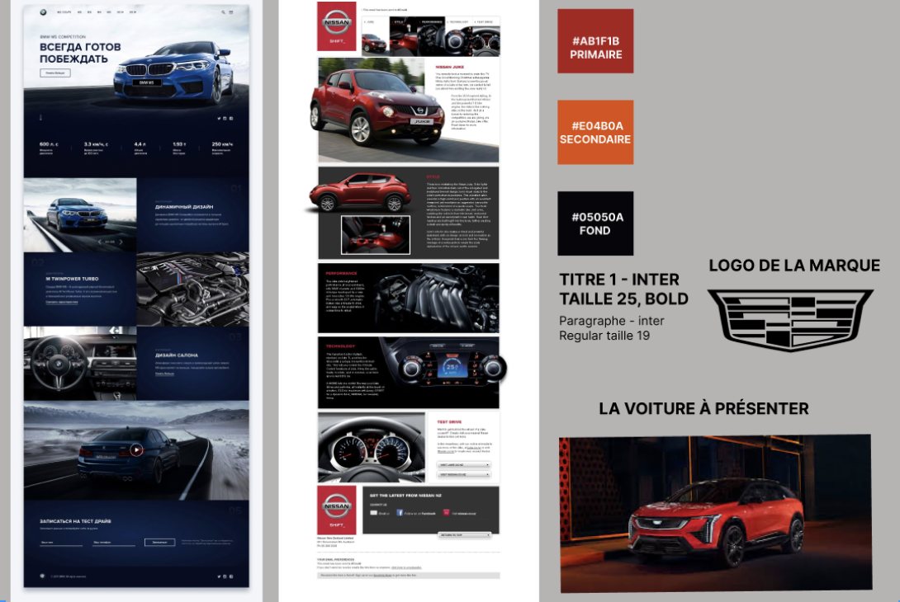
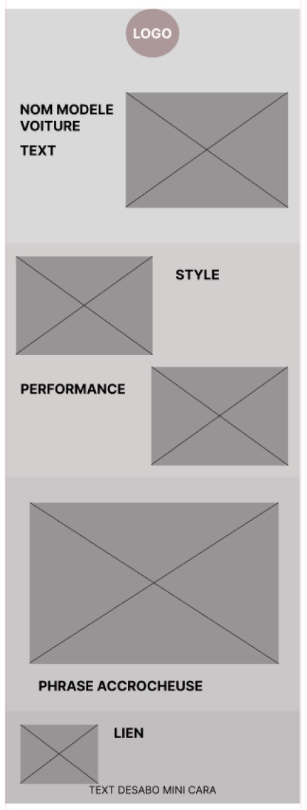
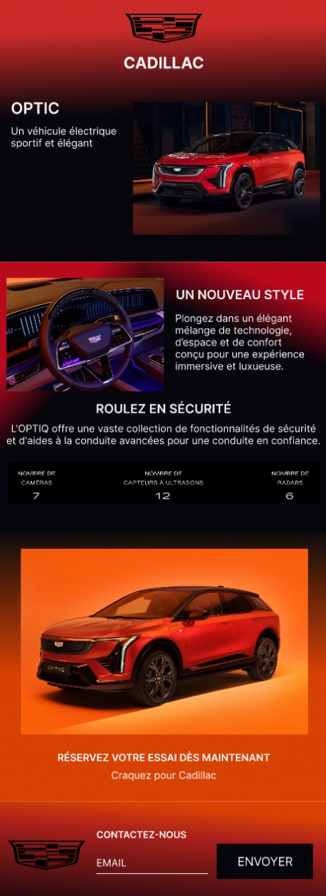

Case study — Défi Sharpen
Conception d'un e-mail newsletter au style moderne pour présenter le dernier modèle électrique de Cadillac.
Défi SharpenUI DesignIdentité visuelleEmail designFigma01 — Le contexte
Sharpen.design est une plateforme qui génère des prompts de design aléatoires pour pratiquer hors d'un cadre scolaire. Le défi reçu : concevoir un e-mail newsletter pour Cadillac en style moderne.
J'ai choisi de présenter le Cadillac Optic, le dernier modèle électrique sorti au moment du défi. Ce choix ancre le design dans un contexte réel : mettre en valeur un véhicule électrique sportif et élégant.
02 — Ma démarche
Recherche d'inspirations
Avant de toucher à Figma, j'ai cherché des newsletters automobiles existantes sur Pinterest pour comprendre et m’inspirer des codes visuels du secteur : mise en avant du véhicule, typographies impactantes, hiérarchie de l'information.
Moodboard UI
J'ai choisi une identité visuelle adaptée au modèle Optic : une palette rouge primaire, orange secondaire et fond sombre pour évoquer puissance et modernité. Typographie Inter en deux épaisseurs bold pour les titres, regular pour le texte pour une lecture claire sur écran.
Wireframe low/mid fidelity
Structuration du contenu en blocs : logo, hero image, section style, section performance, données techniques, CTA "Réservez votre essai", pied de page contact. L'ordre suit la logique de émotion → information → action.
Maquette finale
Application de l'identité visuelle sur le wireframe, intégration du visuel du véhicule, mise en place des contrastes rouge/sombre pour un rendu premium et moderne conforme au brief Sharpen



03 — Ce que j'ai retenu
04 — Mes décisions visuelles
Le fond #05050A fait ressortir le rouge et l'orange du véhicule. Sur fond blanc, les couleurs de l'Optic auraient perdu leur impact. Le sombre renforce aussi le côté premium de la marque.
Choisie pour sa lisibilité sur écran, notamment sur mobile où la plupart des newsletters sont lues. Propre et moderne, elle s'intègre bien dans un design premium sans surcharger.
Chaque section a un rôle précis. Cette organisation permet de lire la newsletter rapidement, en diagonale, sans rater l'essentiel.
"Réservez votre essai dès maintenant", un seul appel à l'action placé à la fin. Multiplier les boutons aurait dispersé l'attention et dilué le message.
05 — Ce que j'ai appris